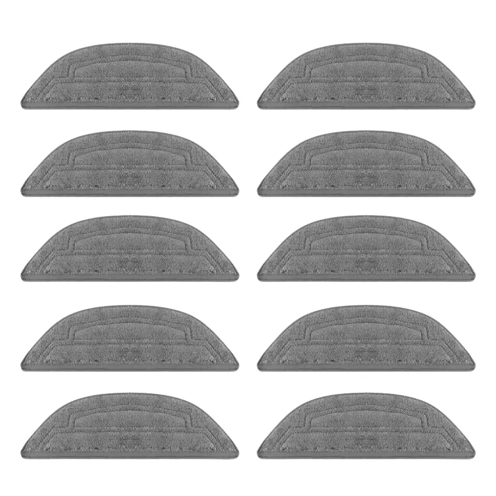
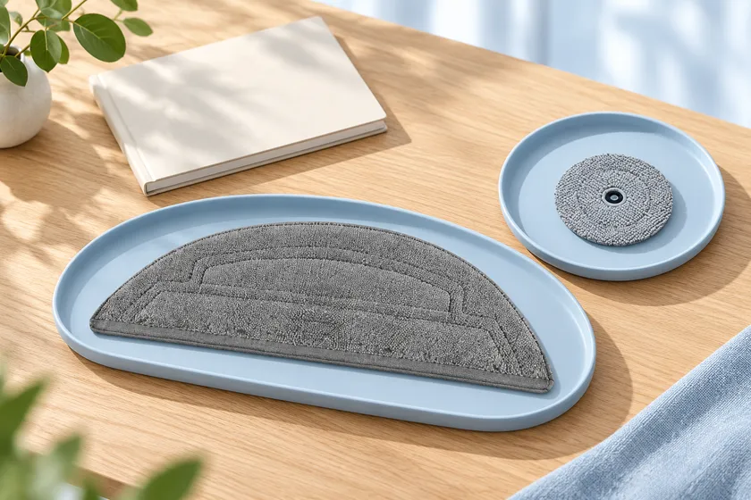
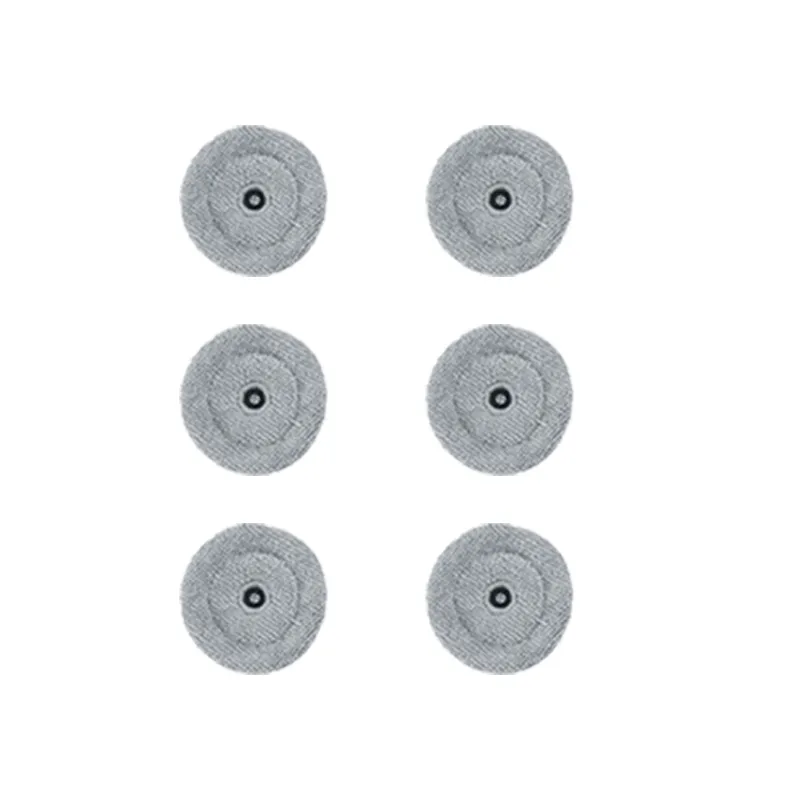

로보락 (Roborock)
로보락 S8 MaxV Ultra 물걸레 재세척·바닥 재청소 차이
글·구성: 제이상점 · 기종별 1:1 호환 실물 점검 · 교체 주기 비교표 · 스마트스토어 패키지 안내

핵심 관리 · 선택 체크포인트
- 판매자 안내｜제이상점이 공식 설명서와 현재 판매 옵션을 바탕으로 직접 작성했습니다.
- 로보락 S8 MaxV Ultra의 걸레 재세척은 도크에서 걸레를 다시 씻는 과정이고, 물걸레 재청소는 더러워진 바닥 구역을 다시 닦는 작업입니다.
- 상품 상세 이미지를 바탕으로 구성한 필터·메인 물걸레·작은 패드 예시입니다.
- 로보락 한국 공식 소개의 스마트한 오염 감지 기능 항목은 재세척을 걸레 세척 중 오염을 확인해 세척 시간을 조정하는 기능으로 설명합니다.
- 특히 공식 페이지는 자동 물걸레 재청소를 앱에서 수동으로 활성화해야 한다고 명시합니다.
실물 부품 디테일 · 관리 구성 이미지




부품 규격 · 점검 기준표
| 구분 | 걸레 재세척 | 바닥 재청소 |
|---|---|---|
| 확인할 대상 | 세척 중인 걸레의 오염 | 다시 걸레질할 바닥 구역 |
| 공식 안내의 작업 | 걸레 세척 시간 조정 | 더러워진 구역 다시 걸레질 |
| 독자가 정리할 질문 | 지금 궁금한 것은 걸레 세척 상태인가요? | 특정 구역을 다시 닦는 설정인가요? |
💡 교체 주기가 겹치는 필터·브러시·물걸레·더스트백은 단품 배송비를 여러 번 내기보다 로보락 S8 MaxV Ultra 기간별 세트(3개월·6개월·1년)로 미리 구비해 두면 물세척 후 24시간 교대 건조까지 끊김 없이 관리할 수 있습니다.
자주 묻는 질문 (FAQ)
Q. 로보락 S8 MaxV Ultra의 확인할 대상 규격과 관리 기준은 무엇인가요?
A. 세척 중인 걸레의 오염 규격을 사용하며, 다시 걸레질할 바닥 구역 기준으로 점검·교체하면 청소 효율을 안정적으로 유지할 수 있습니다.
Q. 로보락 S8 MaxV Ultra의 공식 안내의 작업 규격과 관리 기준은 무엇인가요?
A. 걸레 세척 시간 조정 규격을 사용하며, 더러워진 구역 다시 걸레질 기준으로 점검·교체하면 청소 효율을 안정적으로 유지할 수 있습니다.
Q. 로보락 S8 MaxV Ultra의 독자가 정리할 질문 규격과 관리 기준은 무엇인가요?
A. 지금 궁금한 것은 걸레 세척 상태인가요? 규격을 사용하며, 특정 구역을 다시 닦는 설정인가요? 기준으로 점검·교체하면 청소 효율을 안정적으로 유지할 수 있습니다.
제이상점 1:1 검수 추천 패키지 · 구매 안내
메인 추천 구성
대표 구성 참고가 57,900원대 (옵션·쿠폰별 스마트스토어 결제 화면 기준)
1년세트6개월세트3개월세트
☑️ 주문 전 확인해 두면 좋은 제이상점 안심 포인트
· 기종별 1:1 전용 규격 검수: 모델명·연식에 맞는 호환·정품 구성을 검수해 오주문 불안을 줄였습니다.
· 해외직배송 미리 주문 팁: 중국 구매대행·해외직배송 상품이므로 마지막 여분 1개를 꺼내 쓰는 시점에 개인통관고유부호와 함께 여유 있게 주문해 두시면 훨씬 경제적인 비용으로 끊김 없이 교체하실 수 있습니다.
· 기종별 1:1 전용 규격 검수: 모델명·연식에 맞는 호환·정품 구성을 검수해 오주문 불안을 줄였습니다.
· 해외직배송 미리 주문 팁: 중국 구매대행·해외직배송 상품이므로 마지막 여분 1개를 꺼내 쓰는 시점에 개인통관고유부호와 함께 여유 있게 주문해 두시면 훨씬 경제적인 비용으로 끊김 없이 교체하실 수 있습니다.
📖 더 많은 가정 내 사용 스토리와 상세 후기가 궁금하시다면
📱 네이버 블로그 모바일 원문 보기 ↗